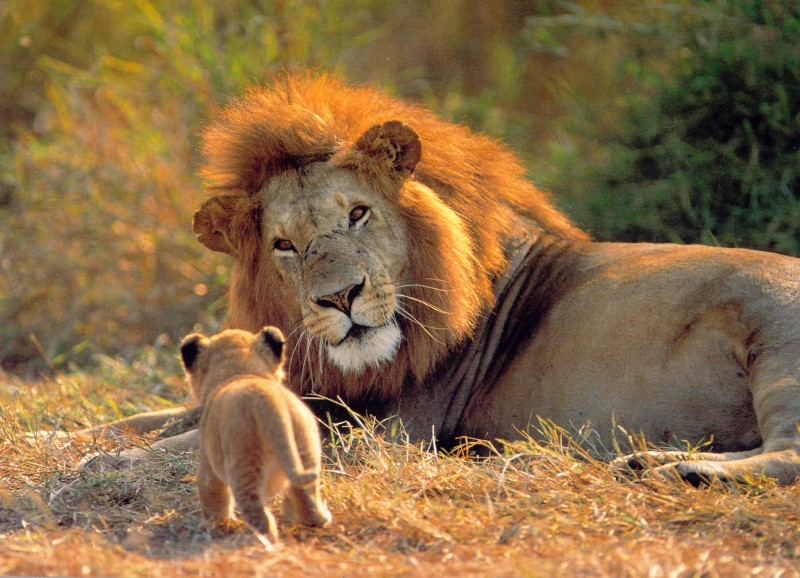
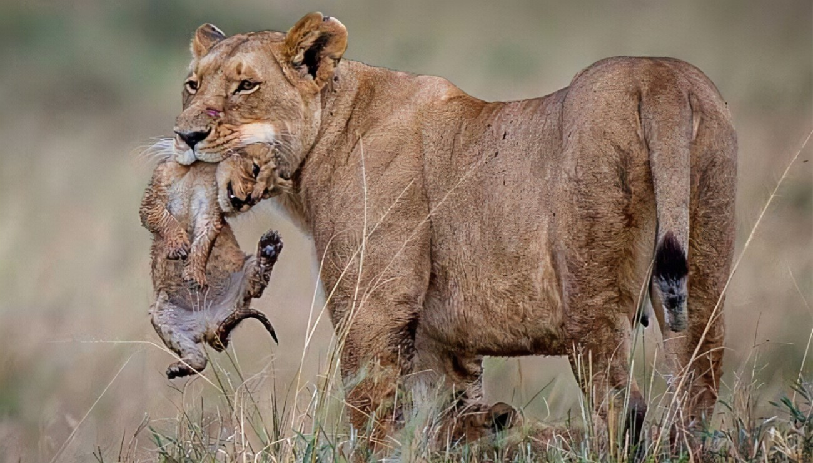
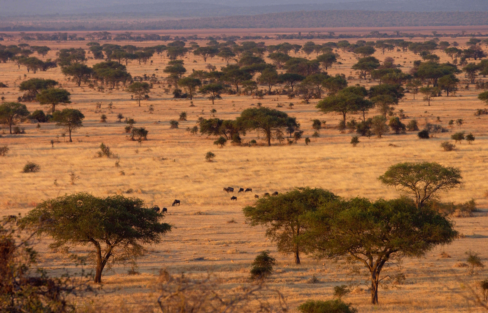
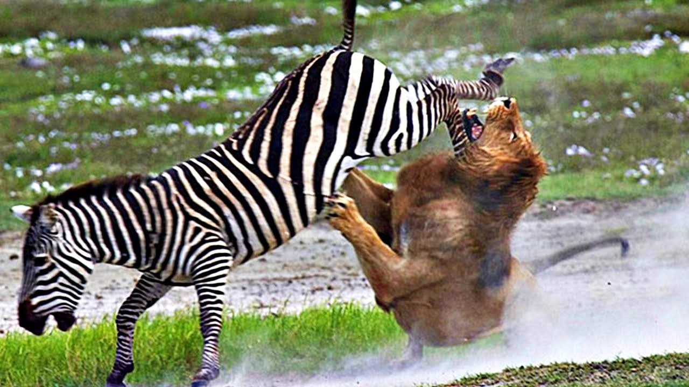

¿Cuánto tiempo viven los leones?
Los leones tienen vidas relativamente cortas. En condiciones ideales y en un ambiente protegido, como los Parques Nacionales, una leona puede alcanzar los 12 a 14 años de edad, mientras que los machos en raras ocasiones superan los 8. Sin embargo, se sabe de casos de leonas particularmente longevas, que alcanzaron casi los 20 años en estado salvaje.
¿Cómo se reproducen los leones?
Los leones se reproducen de manera sexual, como todos los mamíferos, y son animales vivíparos. En cada embarazo una hembra puede dar a luz entre una y cuatro crías en una madriguera aislada del resto de la manada. Las hembras tienen varias épocas de celo al año, durante las cuales pueden aparearse con varios leones, teniendo luego una gestación de 110 días en promedio.
Cuando las crías tienen ya edad suficiente, las hembras se reintegran a la manada. Allí los cachorros juegan y aprenden a cazar y a ocupar su lugar en la jerarquía social. Una vez alcanzada la adultez, muchas de las antiguas crías son expulsadas por la manada para que busquen un territorio propio.
¿Dónde viven los leones?
Los leones llegaron a ser una especie muy ampliamente difundida en África y el Oriente próximo, así como el subcontinente Indio. Actualmente, en cambio, se sabe que los leones salvajes habitan regiones muy restringidas del sureste y centro de África, así como en regiones muy puntuales del noroeste de la India. Por naturaleza prefieren los herbazales y las sabanas, rara vez ingresando a regiones boscosas.
¿Qué comen los leones?
Se trata de criaturas eminentemente carnívoras, grandes cazadores de las llanuras africanas. La cacería se da mediante ataques coordinados y en manada, procurando aislar y sitiar a la presa lo más rápido posible, pues no tienen una resistencia física particularmente alta. De hecho, pueden alcanzar velocidades de hasta 60 kmph, pero sólo en distancias breves.
Sus presas predilectas suelen ser mamíferos grandes, como ñus, búfalos, impalas, cebras, jabalíes, ciervos o jirafas jóvenes, e incluso focas, si logran dar con alguna en la costa de Namibia. Si habitan cerca de rebaños de ganado, es probable que también se lleven alguna res de vez en cuando.
La cacería se organiza por sexos: las hembras cazan juntas, con ayuda ocasional de los machos, pero el producto de dicha cacería será para ellas y para las crías; los machos deben cazar por su propia cuenta el alimento.
Caracteristicas de tipos de leones
| Nombre del león | Tamaño | Peso | Habitat | Esperanza de vida | Comportamiento | Estado de conservación |
|---|---|---|---|---|---|---|
| Leon de Katanga | Macho: Entre los 2 y 3 metros, Hembra:2.9 metros | Macho: 200 kilos, Hembra: Entre 120 y 150 kilos | Habita en el sur del continente africano(República del Congo, namibia, botswana, zimbabwe y Zambia) | 12 años | Social y territorial que vive en manadas | Al borde de la extinción |
| Leon del Congo | Entre 1.6 y 2.4 metros | Macho: 250 kilos, Hembra: Entre 160 y 190 kilos | Uganda en su selva y sábana y en República del Congo | 10 a 14 años | Utiliza tactica de emboscada, dependiendo de la caza solitaria | En peligro de extinción |
| Leon Transvaal | Macho: Entre 2.4 a 3.3 metros, Hembra: Entre 2,5 a 2.7 metros | 250 kilos | Desierto de Kalahari | 12 a 15 años | Sociales y gregarios | Vulnerable |
| Leon de Átlas | Macho: Entre 2.74 y 3.35 metros, Hembra: Entre 2.13 a 2.74 metros | Macho: Entre 230 y 270 kilos, Hembra: Entre 140 y 160 kilos | Montañas del Atlas, que se extienden a través de Marruecos, Argelia y Túnez | 10 a 15 años | Eficiente cazador en solitario o en pequeños grupos | Se extinguió en la naturaleza a mediados del siglo XX |
| Leon de Nubia | Macho: Entre 1.7 a 2.5 metros, Hembra: 1.4 a 1.8 metros | Macho: Entre 150 y 225 kilos, Hembra: Entre 120 y 150 kilos | Áreas boscosas y las sabanas del valle del Nilo, desde el Delta del Nilo en Egipto hasta Sudán | 10 a 14 años | Cazadores oportunistas, en el dia mayormente descansan y cazan en el amanecer y atardecer | Extinguido en la naturaleza en la década de 1920 |
| Leon Asiático | Macho: Entre 1.7 a 2.5 metros , Hembra: 1.4 a 1.8 metros | Macho: Entre 170 y 220 kilos, Hembra: 100 kilos | India, bosque de Gir | 14 años | Cazadores oportunistas | Al borde de la extinción |
| León de África Occidental | 3 metros | Macho: entre 170 y 220 kilos, Hembra: 100 kilos | Nigeria y Senegal | 14 años | Timida y asustadiza | Peligro critico de extinción |